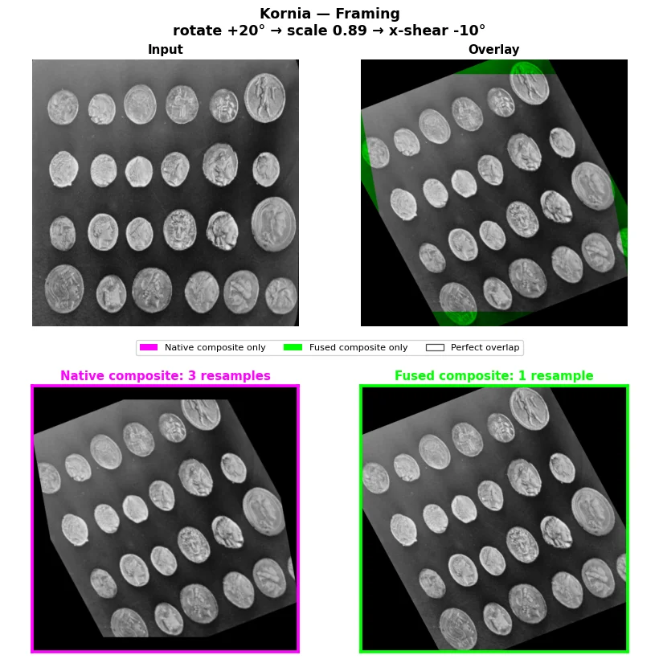
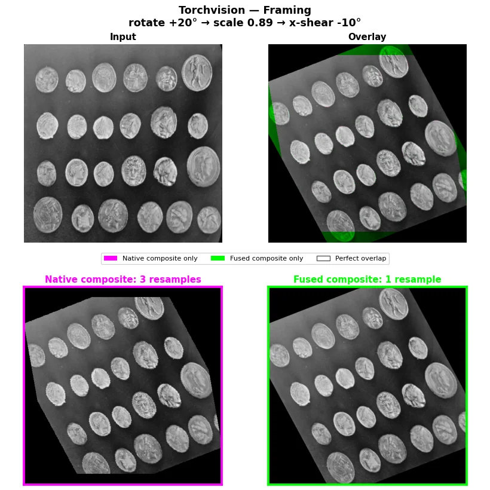
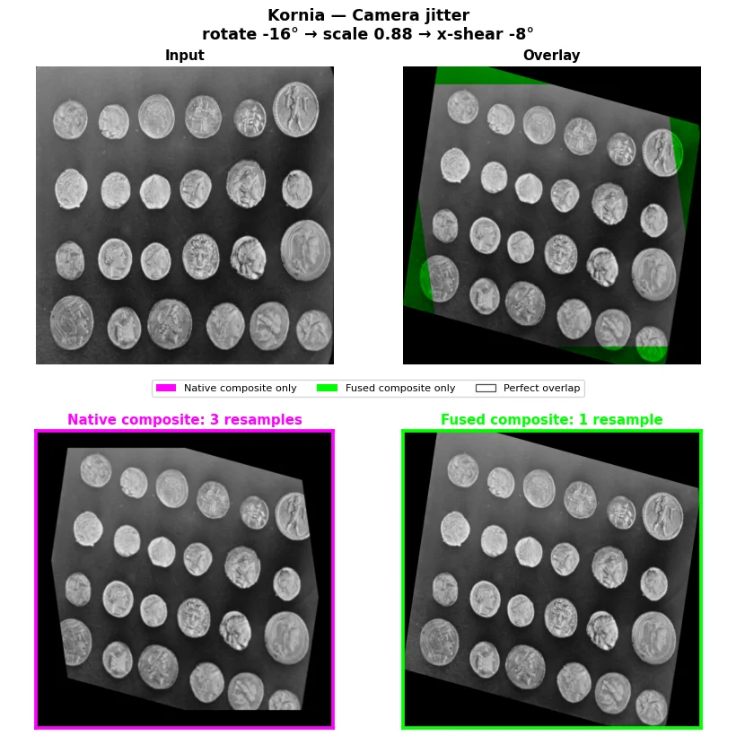
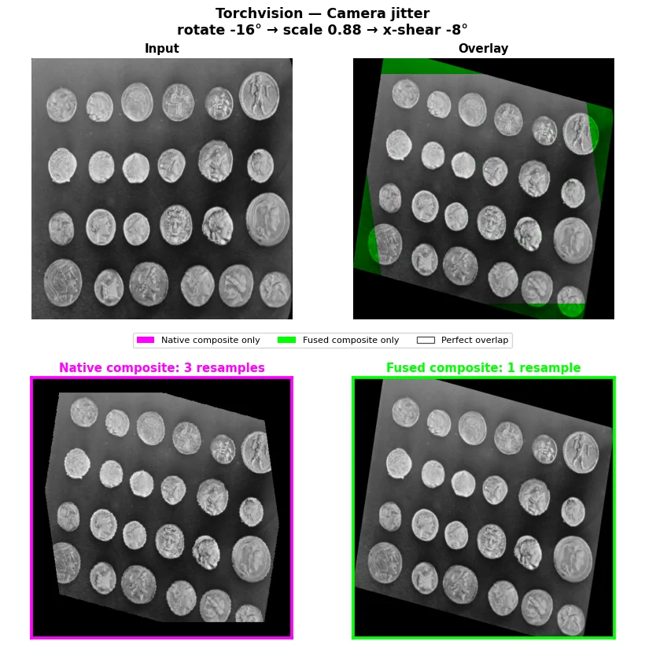
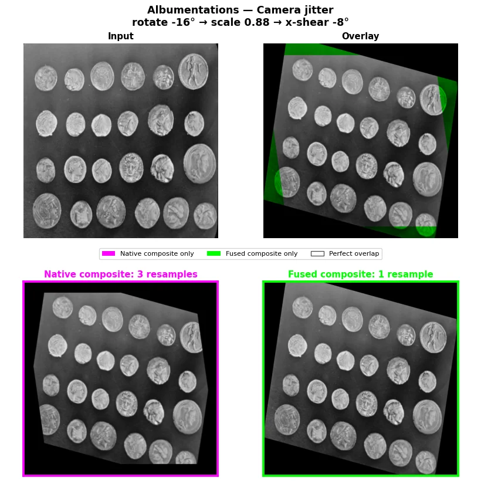
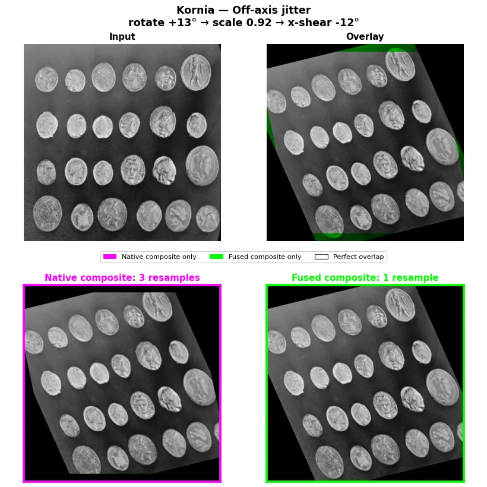
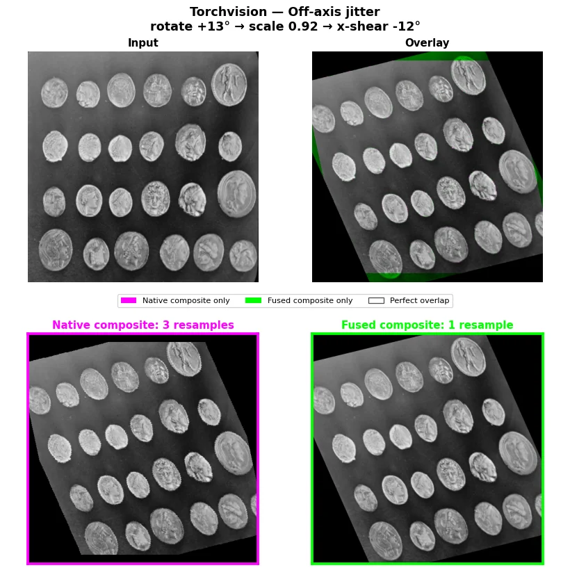

Quality and fidelity¶
fuse-augmentations can compose compatible geometric transforms and apply the result in one resampling pass. That can avoid repeatedly interpolating the same image. It does not imply that a fused result is pixel-identical to Kornia, TorchVision, or Albumentations.
This distinction matters for training reproducibility, scientific comparisons, dense prediction, and any application with strict reference-output requirements.
Fusion fidelity is not native-backend equivalence
A pipeline may use fewer resampling passes and still differ from its native backend because of coordinate conventions, interpolation, padding, clipping, transform order, or random-parameter sampling. Validate the complete pipeline you intend to use.
What does fidelity mean?¶
Quality has several independent layers. Passing one layer does not prove the others.
| Layer | Question | Typical evidence |
|---|---|---|
| Plan fidelity | Did the planner fuse and split the transforms you expected? | Inspect fusion_plan and its descriptors. |
| Parameter fidelity | Did native and fused paths use the same sampled transform parameters? | Capture or reset every relevant RNG state; compare sampled matrices. |
| Coordinate fidelity | Does the composed matrix map points using the intended center and direction conventions? | Test known points, corners, boxes, and keypoints. |
| Numeric fidelity | Are output pixels close under a documented tolerance? | Compare max, mean, and quantile errors on representative and adversarial images. |
| Target fidelity | Do images, masks, boxes, and keypoints remain aligned? | Test all targets together, including boundaries and unsupported transforms. |
| Task fidelity | Does the downstream metric remain acceptable? | Compare task-level accuracy, calibration, or loss across controlled runs. |
For research reproduction, treat all six layers as separate acceptance criteria.
Why one resampling pass can help¶
Consider three compatible affine transforms. A native sequential pipeline may resample after each transform. A fused pipeline can multiply the matrices first and resample once:
Fewer interpolating passes can reduce repeated blur and repeated boundary sampling. The benefit depends on the transforms:
- Arbitrary rotations, scales, shears, and translations normally require interpolation.
- Exact flips and right-angle rotations can be implemented without interpolation.
- Pointwise color transforms do not perform geometric resampling.
- Blur, elastic distortion, and other spatial kernels are different operations and may form fusion barriers.
The public n_warps_saved value should be interpreted as a planner estimate, not a literal count of native interpolation calls. Exact operations are currently included in that metric even when the native operation was already lossless. Use the fusion plan to understand the actual segment types.
Deterministic backend coverage¶
The figures below avoid selecting one favourable backend or one random draw. They apply the same three fixed geometry recipes—rotation → scale → x-shear—to Kornia, TorchVision v2, and Albumentations. All angle, scale, and shear ranges collapse to one value, so the native and fused paths for a given backend use identical transform parameters. The only intended execution difference is three sequential bilinear resamples versus one composed resample.
The top-right overlay puts native-backend-only detail in red, Fuse Compose-only detail in green, and a perfect overlap in yellow. Compare each backend only with its own native output: backend centre conventions, border handling, and interpolation differ by design.
Framing¶


Camera jitter¶



Off-axis jitter¶


This is a backend-specific resampling illustration, not a native-pixel-parity, cross-backend-equivalence, or task-quality claim. Recreate the default Kornia framing figure with uv run --all-extras --group benchmark python examples/visualize_resampling_loss.py. Select another recipe with --case camera-jitter, another backend with --backend torchvision, or another bundled image with --image astronaut.
Native-backend parity¶
The package recognizes transform objects from several backends, but recognition does not guarantee identical native execution semantics.
| Surface | Verified behavior | Important boundary |
|---|---|---|
| Fused affine core | Compatible matrices are composed and executed through a single fused warp. | Output follows the package's grid, interpolation, and padding conventions. |
| TorchVision geometry | Fixed native v1 replays cover rotation and every RandomAffine term on non-square inputs; the v2 rotation direction is regression-tested in a composed chain. |
Perspective uses a bounded MSE replay check, and crop-resize checks shared parameters, matrix, and shape rather than false pixel parity. |
| Kornia geometry | Fixed native replays cover combined affine, quarter rotation, perspective, and crop-resize on non-square batches. | Results rely on Kornia's current affine/grid conventions and must be revalidated when upgrading Kornia. |
| Albumentations geometry | Fixed native replays cover combined affine, ShiftScaleRotate, crop-resize, Perspective(keep_size=True), D4, quarter turns, and transpose. |
Perspective(keep_size=False) has sampled output dimensions, so it cannot form one batched fused tensor segment. |
| Exact D4 operations | All supported Albumentations D4 elements and axis-swapping shapes are tested against native execution. | The reported warp-saving count is not a literal native-resampling count. |
| Projective transforms | Fixed native projective parameters are replayed for all three backends. | Cross-backend raster output is not an equivalence target; each backend retains its own renderer conventions. |
| Linear color operations | Compatible brightness, contrast, and normalization operations can be represented by color matrices. | Clipping order, contrast midpoint, input range, channel count, and backend semantics can produce differences. |
What the parity tests prove¶
The test suite deliberately uses fixed parameters, asymmetric landmarks, non-square batches, and probability boundaries. It tests the failure modes that a random natural-image comparison can hide: angle direction, percentage-to-pixel conversion, shear order, crop coordinates, D4 element mapping, sampled homography scale, and p=0 identity behavior.
These are single-operation replay contracts. A sequential native pipeline and a multi-operation fused pipeline usually cannot be pixel-identical: the native path interpolates after each step, while the fused path interpolates once. Use the figures above and the fidelity protocol below to evaluate the complete pipeline, not a primitive-level parity test alone.
TorchVision geometric differences¶
TorchVision RandomRotation exposes an inverse-sampling angle, while Fuse Compose stores forward pixel-space matrices. The adapter converts that sign before fusing a chain. This matters only when multiple operations are composed; a one-operation native fast path can otherwise hide the issue.
Native pixel parity remains limited by center, interpolation, fill, and repeated-resampling conventions. In a fixed 30-degree v2 rotation probe on a seed-0 random 1×3×64×64 tensor, the current environment observed:
- maximum absolute difference:
0.2385; - mean absolute difference:
0.00221; - fraction of values with absolute difference greater than
1e-2:0.0243.
These values demonstrate the remaining convention difference, not behavioral equivalence or a universal error model. Other images and transforms can differ by more or less. If native TorchVision pixels are the reference, establish transform-specific tolerances before adopting the fused path. expand=True is refused rather than approximated.
Albumentations execution paths¶
Albumentations has two materially different execution contexts:
- The CPU/OpenCV path accepts the supported image-only HWC NumPy convention and applies composed matrices through OpenCV.
- The torch path accepts batched tensors and applies a fused
grid_sample, enabling device execution.
The same sampled geometry does not make these rasterizers bit-identical. Border modes and bilinear sub-pixel weights can differ. Multi-target NumPy dictionaries are not a drop-in replacement for native albumentations.Compose.
Reordering changes semantics¶
ReorderPolicy.POINTWISE and ReorderPolicy.AGGRESSIVE can move color or pointwise operations across geometric operations to create longer fusion runs. These policies are performance optimizations that can change output.
Pointwise operations do not generally commute with finite-image warps:
- padding values are introduced at different stages;
- native operations may clip after every step;
- color statistics can depend on the image before or after a warp;
- interpolation and nonlinear operations are order-sensitive.
In a fixed contrast-then-rotation probe, POINTWISE versus NONE produced a maximum absolute difference of 0.3390 and a mean difference of 0.1033; every compared value differed by more than 1e-3.
Use ReorderPolicy.NONE when operation order is part of the scientific or application contract. If you opt into reordering, validate it as a new pipeline rather than assuming it is an acceleration-only switch.
Color fidelity¶
Fused linear color operations have their own parity boundary.
| Condition | Expected fidelity |
|---|---|
| Linear operations, controlled range, compatible clipping semantics | Often close; validate per backend. |
| Default final-only clipping | Can differ from a native pipeline that clips after each operation. |
clip_policy="per_op_parity" |
Matches the tested native TorchVision brightness-clamp chain; a gamut-escaping predecessor before mean-relative contrast can still differ by roughly 1e-2. |
| Normalize in a fused run | Values outside image gamut are intentional; final image-range clipping is disabled. |
| Non-RGB input | Color fusion can fall back to sequential native execution. |
| Saturation, hue, gamma, equalization | Not generally representable by one linear color matrix; expect passthrough or barriers. |
Do not use a single global tolerance for all color operations. Define tolerances by backend, operation order, input range, clip policy, dtype, and channel count.
Auxiliary-target fidelity¶
Images and targets are aligned only when every coordinate-changing operation is understood and routed safely.
Unknown spatial passthroughs can desynchronize targets
With `data_keys`, an unknown TorchVision crop or resize can transform the image while leaving the mask, boxes, or keypoints unchanged. `RandomCrop`, `CenterCrop`, and `Resize` reproduced this failure. Treat an `Unknown ... SPATIAL_KERNEL` warning as unsafe in a multi-target pipeline until the transform is explicitly supported or refused.
Additional target boundaries:
- Masks use the same geometric grid, but mask padding is fixed to zero even when image padding uses another mode.
- Nearest-neighbor masks preserve hard labels and are intentionally detached from autograd.
- Bilinear masks require floating-point inputs and retain a gradient path; they mix values at boundaries.
- Boxes and keypoints are dense fixed-size tensors. The package does not clip boxes, filter invalid or low-visibility instances, propagate labels, or manage visibility flags.
- Unknown coordinate-changing transforms are guarded by a finite class-name list, not by a complete structural capability check.
For segmentation and detection, test the image and every target together. Do not validate the image path in isolation.
A practical fidelity protocol¶
Use this protocol before treating a fused pipeline as equivalent enough for an application or paper:
- Freeze the backend and dependency versions.
- Disable reordering with
ReorderPolicy.NONEfor the parity baseline. - Use deterministic, explicitly recorded transform parameters. Do not assume global seeds control every backend.
- Compare the native and fused transform matrices where possible.
- Test structured images that reveal coordinates and borders, not only natural photographs.
- Include constant images, impulses, checkerboards, gradients, masks with every class label, boxes at image edges, and out-of-bounds keypoints.
- Report maximum, mean, median, and high-quantile error rather than only one maximum.
- Verify output shape, dtype, device, range, and target alignment.
- Repeat with the actual interpolation, padding, clipping, antialias, and execution settings.
- Confirm the downstream task metric under a separately seeded controlled run.
Record accepted differences as part of the pipeline contract. “Visually similar” is not a reproducibility criterion.
What can be claimed safely?¶
The following statements are defensible:
- Compatible geometric matrices can be composed before rasterization.
- A fused geometric segment can use one resampling operation where a sequential interpolating chain would use several.
- Fewer resampling passes can reduce repeated interpolation.
- Exact supported operations can remain lossless within the package's exact path.
- Numeric parity depends on backend and configuration and must be measured.
Avoid claiming that fusion is automatically higher quality, pixel-identical, or a drop-in behavioral replacement. Performance evidence is reported separately in Benchmarks, and a reproducibility protocol is described in Methodology.